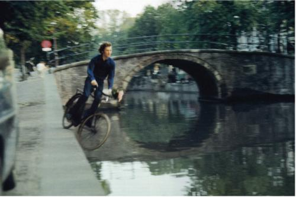

March 1, 2008 6:00 pm to April 26, 2008

TELIC Arts Exchange becomes a lab for the production of a new genre of art from March 1 through April 26. In light of recent cultural developments, video art, performance art, and conceptual art no longer seem like esoteric, avant-garde enterprises. Social networking and content distribution platforms, such as YouTube, suggest that these forms are becoming normative modes of public address and interaction.
Gravity Art, curated by filmmaker Rene Daalder, is an exhibition that retroactively proposes a genre based on the idea of gravity as a medium. Operating in relation to Daalder’s documentary on Bas Jan Ader, Here is Always Somewhere Else, and his website basjanader.com, this exhibition brings together several generations of conceptual artists through the unlikely, but perfectly obvious conceit of gravity.
One dominant theme of Gravity Art is an interrogation of the legacy of Bas Jan Ader, the conceptual artist from the Netherlands who found himself in various art schools in Southern California in the late 1960’s and early 1970’s. The exhibition itself follows this trajectory: an exhibition at De Appel co-curated by Daalder in Amsterdam called Gravity in Art was a point of departure for this show at TELIC; many of the artists are Dutch; and Daalder himself emigrated from the Netherlands to Los Angeles around the same time as Ader.
Gravity Art features work by are Vito Acconci, Bas Jan Ader, Monsieur Moo, Johanna Billing, Slater Bradley, Lonnie van Brummelen, Daniel Devlin, Gino de Dominicis, Hege Dons Samset, Friedrich Kunath, Gavin Maitland, Ari Marcopoulos, Liza May Post, Willem de Ridder, Pipilotti Rist, Fernando Sanchez, Wim Schippers and Wim Vanderlinden, Richard Serra, Pascual Sisto, Stelarc, Marco Schuler, Joel Tauber, Jacob Tonski, Tsui Kuang-Yu, Marijke van Warmerdam, Guido van der Werve, and Erik Wesselo.
A symposium presented by TELIC and hosted by Daalder at UCLA in April brings several Dutch conceptual artists to Los Angeles, including the renowned Fluxus performer Willem de Ridder and the successful newcomer Guido van der Werve, and a special presentation of Gerry Schum’s rarely seen but highly influential conceptual art film compilation Identifications.
This exhibition is made possible in part with support from the Mondriaan Foundation, Amsterdam, the Consulate General of the Netherlands in New York, The Andy Warhol Foundation for the Visual Arts, and basjanader.com.
Rene Daalder: Curator
Aaron Ohlmann: Exhibition Coordination
Jens Hommert: Exhibition Design
Michael Sehnert: Technical Advisor
Pascual Sisto: Special thanks